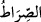

Yâni onların kalplerini kör edip basîretlerini yok ettiğimiz gibi dilesek zâhir gözlerini
de kör eder ve büsbütün ortadan kaldırırdık. Bu onlara cezâ üstüne cezâ olurdu.
“O zaman doğru yolu bulmaya koşuşurlardı,”
“ biri diğerinin önüne geçmektir. “ eğriliği olmayan, bilakis doğru olan
yoldur. Yani onlar gitmeye alışık oldukları geniş yola diğerlerinden önce ulaşmak ve
varmak için acele ederlerdi, “ama nasıl göreceklerdi?” yâni gözleri olmadığı zaman
diğerleri bir tarafa yolu ve maksadlarını temin cihetine girmeyi nasıl göreceklerdi? Yani
göremezler demektir. Çünkü “” kelimesi “ mânâsınadır. “ ise burada inkar
ise burada inkar
içindir. Olumsuzluk ifade eder. Hâsılı bu ifâde Mekke halkını büsbütün kör etme
tehdîdidir. Çünkü Lut (a.s.)’ın kavmi onu yalanlayıp genç delikanlılar suretinde
kendisine gelen melek misafirleri ondan ısrarla taleb ettiklerinde Allah Teâlâ Lût
kavmine yaptığı gibi (bk. el-Kamer, 54/37) böyle yapmaya da kadirdir.
et-Te’vîlâtü’n-Necmiyye’de der ki: “Allah Teâlâ göz çukuru bile olmayacak şekilde
zâhir gözün büsbütün kör edilmesine işâret etmektedir. Bu durumda göz nasıl ağlayacak
da âhirette sâhibinin Allah korkusundan ağladığına şâhidlik yapacaktır? Yine bâtın
gözünün büsbütün kör edilmesine işâret etmektedir. Bâtın gözü büsbütün kör
edildiğinde, bâtıldan hakka dönmek için hakkı batıldan nasıl görüp ayıracaktır? Bâtın
gözüyle hakkı göremeyince, bâtıldan nasıl korkacaktır? Ki bu korkunun ateşiyle kalbi
yansın ve gözünden yaş aksın, gözyaşları da onda korku bulunduğuna şâhidlik etsin.
Ağlama ve inleme korkunun delilidir.
Kimde bunlar yoksa, o bedbahttır
67. Eğer dilesek oldukları yerde onların şekillerini değiştirirdik de ne ileriye
gitmeye güçleri yeterdi ne de geri gelmeye!
“Eğer dilesek oldukları yerde onların şekillerini değiştirirdik de”
“ sûreti daha çirkin bir hale çevirmektir. Bu durum insandaki canlılık sûretini
koruyup onu hayvan suretine çevirerek ya da canlılık kuvvelerini yok ederek taş ve
benzeri cansız varlıklara çevirmekle olur.
Mânâ şöyeldir: Eğer onları mükellef olma mertebesinden ve îtibar derecesinden
düşürmek istesek, Dâvud (a.s.) zamanında Mûsâ (a.s.)’ın kavmi olan İsrailoğullarına
yaptığımız gibi (bk. el-Mâide, 5/60) onları maymun ve domuzlar kılarak sûretlerini
değiştirirdik. Ya da onları taş ve kerpiçler hâline getirirdik. Bu ise ilkinden daha ağır ve
çirkindir. Çünkü ilki insanlık rütbesinden hayvanlığa düşmektir. İkincisi ise